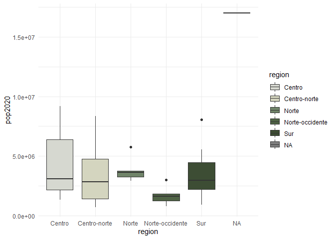
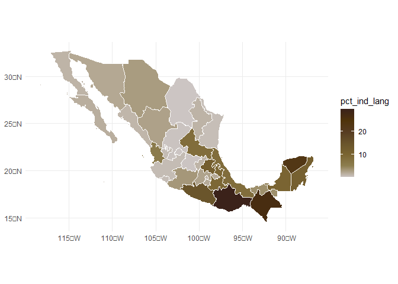
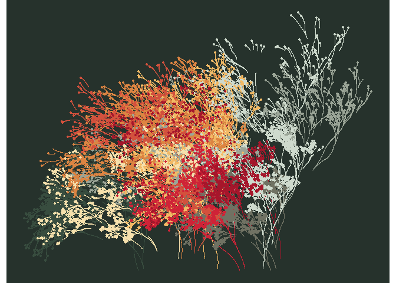
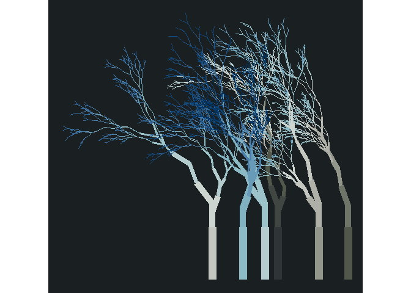
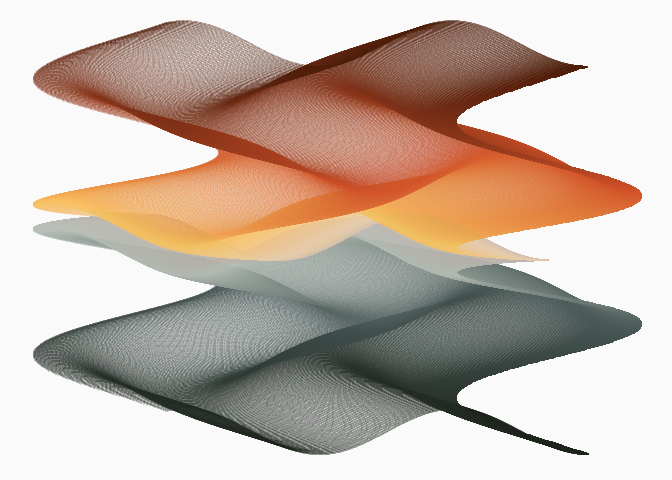
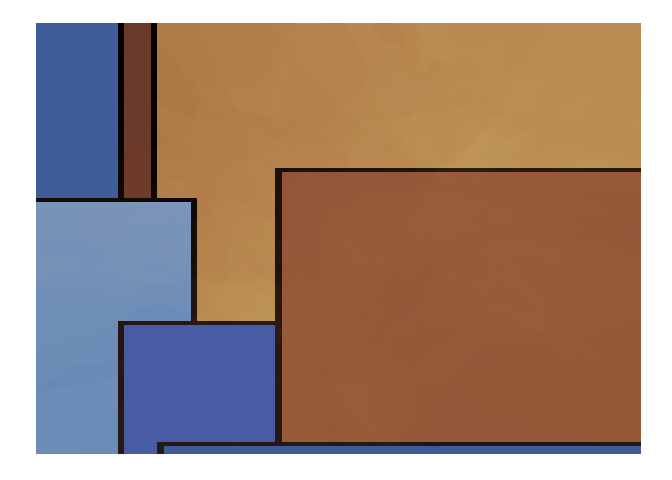
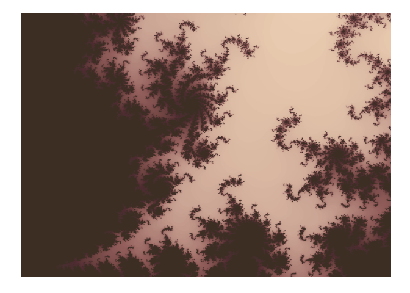
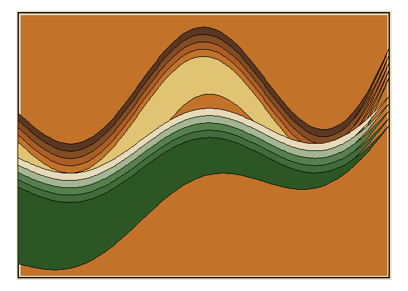

MexBrewer is a package with color palettes inspired by the works of Mexican muralists. The inspiration for this package was {MetBrewer} by Blake Mills. The structure of the package and coding, like {MetBrewer}, is based on {PNWColors} and {wesanderson}.
Installation
Currently, there is only a development version of {MexBrewer}, which can be installed like so:
if (!require("remotes")) install.packages("remotes")
remotes::install_github("paezha/MexBrewer") 

Examples
library(aRtsy) # Ijeamaka Anyene's package for generative art
library(flametree) # Danielle Navarro's package for generative art
library(MexBrewer)
library(mxmaps)
library(sf)
library(tidyverse)Invoke data sets used in the examples:
data("mx_estados") # Simple features object with the boundaries of states in Mexico
data("df_mxstate_2020") # Data from {mxmaps }with population statistics at the state levelJoin population statistics to state boundaries:
mx_estados <- mx_estados %>%
left_join(df_mxstate_2015%>%
dplyr::transmute(pop2015 = pop, # Population by state in 2015
am2015 = afromexican, # Afromexican population by state in 2015
state_name),
by = c("nombre" = "state_name")) %>%
left_join(df_mxstate_2020 %>%
#Percentage of population that speak an indigenous language
mutate(pct_ind_lang = indigenous_language/pop * 100) %>%
dplyr::transmute(pop2020 = pop,
am2020 = afromexican,
state_name,
pct_ind_lang),
by = c("nombre" = "state_name")) %>%
# Calculate the change in popualtion and afromexican population between 2015 and 2020
mutate(delta_pop = (pop2020 - pop2015)/pop2015,
delta_am = (am2020 - am2015)/am2015)Distribution of population by geographic region in Mexico:
ggplot(data = mx_estados,
aes(x = region, y = pop2015, fill = region)) +
geom_boxplot() +
scale_fill_manual(values = mex.brewer("Concha", n = 5)) +
theme_minimal()
Percentage of population who speak an indigenous language in 2020 by state:
ggplot() +
geom_sf(data = mx_estados,
aes(fill = pct_ind_lang),
color = "white",
size = 0.08) +
scale_fill_gradientn(colors = mex.brewer("Tierra")) +
theme_minimal()
Percentage change of population by state between 2015 and 2020:
ggplot() +
geom_sf(data = mx_estados,
aes(fill = delta_pop),
color = "white",
size = 0.08) +
scale_fill_gradientn(colors = mex.brewer("Atentado")) +
theme_minimal()
Percentage change of afromexican population by state between 2015 and 2020:
ggplot() +
geom_sf(data = mx_estados,
aes(fill = delta_am),
color = "white",
size = 0.08) +
scale_fill_gradientn(colors = mex.brewer("Alacena")) +
theme_minimal()
Some Rtistry
Danielle Navarro’s {flametree}
The following three images were created using the {flametree} package.
# pick some colours
shades <- MexBrewer::mex.brewer("Tierra") %>%
as.vector()
# data structure defining the trees
dat <- flametree_grow(seed = 3563,
time = 11,
trees = 10)
# draw the plot
dat %>%
flametree_plot(
background = shades[1],
palette = shades[2:length(shades)],
style = "nativeflora"
)
# pick some colours
shades <- MexBrewer::mex.brewer("Concha") %>%
as.vector()
# data structure defining the trees
dat <- flametree_grow(seed = 3536,
time = 8,
trees = 6)
# draw the plot
dat %>%
flametree_plot(
background = shades[1],
palette = rev(shades[2:length(shades)]),
style = "wisp"
)
# pick some colours
shades <- MexBrewer::mex.brewer("Frida") %>%
as.vector()
# data structure defining the trees
dat <- flametree_grow(seed = 3653,
time = 8,
trees = 6)
# draw the plot
dat %>%
flametree_plot(
background = shades[1],
palette = shades[2:length(shades)],
style = "minimal"
)
Koen Derks’s aRtsy
The following three images were created using the {aRtsy} package.
Functions:
my_formula <- list(
x = quote(runif(1, -1, 1) * x_i^2 - sin(y_i^2)),
y = quote(runif(1, -1, 1) * y_i^3 - cos(x_i^2))
)
canvas_function(colors = mex.brewer("Atentado"),
polar = FALSE,
by = 0.005,
formula = my_formula)
Mosaic:
canvas_squares(colors = mex.brewer("Alacena"),
cuts = 20,
ratio = 1.5,
resolution = 200,
noise = TRUE)
Mandelbrot’s set:
canvas_mandelbrot(colors = mex.brewer("Aurora"),
zoom = 8,
iterations = 200,
resolution = 500)
Meghan S. Harris’s waves
These plots are adaptations of Meghan Harris’s artsy waves. Create data frames with wave functions:
##Set up the "range" on the x axis for horizontal waves=====
wave_theta <- seq(from = -pi,
to = -0,
by = 0.01)
# Create waves using functions
wave_1 <- data.frame(x = wave_theta) %>%
mutate(y = (sin(x) * cos(2 * wave_theta) + exp(x * 2)))
wave_2 <- data.frame(x = wave_theta) %>%
mutate(y = (0.5 * sin(x) * cos(2.0 * wave_theta) + exp(x)) - 0.5)Define a function to convert a single wave into a set of n waves. The function takes a data frame with a wave function and returns a data frame with n waves:
# Creating a function for iterations====
wave_maker <- function(wave_df, n, shift){
#Create an empty list to store our multiple dataframes(waves)#
wave_list<- list()
#Create a for loop to iteratively make "n" waves shifted a distance `shift` from each other #
for(i in seq_along(1:n)){
wave_list[[i]] <- wave_df %>%
mutate(y = y - (shift * i),
group = i)
}
#return the completed data frame to the environment#
return(bind_rows(wave_list))
}Create layered waves using the data frames with the wave functions above:
wave_layers <- rbind(wave_1 %>%
wave_maker(n = 5,
shift = 0.075),
wave_2 %>%
wave_maker(n = 5,
shift = 0.075) %>%
mutate(group = group + 5)) # adjust the group counter to identify waves uniquelyPlot layered waves using cartesian coordinates and palette Alacena:
ggplot(wave_layers) +
geom_rect(aes(xmin = -pi,
xmax = -0.0,
ymin = min(y) - 0.50,
ymax = max(y) + 0.30 ),
size = 2.5,
color = mex.brewer("Alacena")[6],
fill = mex.brewer("Alacena")[4]) +
geom_rect(aes(xmin = -pi,
xmax = -0.0,
ymin = min(y) - 0.50,
ymax = max(y) + 0.30 ),
size = 1,
color = "black",
fill = NA) +
geom_ribbon(aes(x,
ymin = y - 0.025 * 4 * x,
ymax = y + 0.015 * 10 * x,
group = group,
fill = group),
color = "black",
size = 0.5) +
scale_fill_gradientn(colors = mex.brewer("Alacena"))+
theme_void() +
theme(legend.position = "none")
Plot layered waves using polar coordinates and palette Atentado:
ggplot(wave_layers) +
geom_rect(aes(xmin = -pi,
xmax = -0.0,
ymin = min(y) - 0.45,
ymax = max(y) + 0.30 ),
size = 2.5,
color = mex.brewer("Atentado")[6],
fill = mex.brewer("Atentado")[3]) +
geom_rect(aes(xmin = -pi,
xmax = -0.0,
ymin = min(y) - 0.45,
ymax = max(y) + 0.30 ),
size = 1,
color = "black",
fill = NA) +
geom_ribbon(aes(x,
ymin = y - 0.025 * 4 * x,
ymax = y + 0.015 * 10 * x,
group = group,
fill = group),
color = "black",
size = 0.5) +
scale_fill_gradientn(colors = mex.brewer("Atentado")) +
coord_polar(theta = "x",
start = 0,
direction = 1,
clip = "on") +
theme_void() +
theme(legend.position = "none")